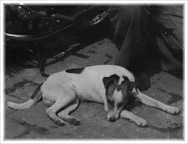
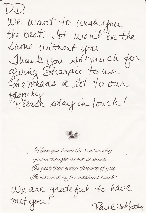

Dog Rescue
1 DOG FOR ADOPTION RIGHT NOW!!!
FEMALE
18 MONTH OLD PRESA CANARIO TO A GOOD HOME!
For those who want to adopt a dog:
The best way to contact us is via e-mail: castleofpresa@yahoo.com with your name, telephone number, and your address for more info. (No phone #? No address? .....No reply.)
We want to answer all of your e-mails as soon as possible. However, sometimes due to a large amount of e-mails, please allow 3-5 business days for us to reply. We don't take calls with unknown or blocked I.Ds. Thank you for your understanding.
NEWS
Before we will build our largest dog shelter in the U.S., we will be helping an existing private dog shelter here in Phoenix Arizona.
I HAVE A DREAM
I have a dream that I will rescue every dog that was ever dumped because someone didn't want him anymore, rescue every dog from people who betrayed the trust of their dog, and from people who don’t appreciate the unconditional love and loyalty that only a dog can give them. I have a dream that I will open the largest dog rescue facility in the U.S., someday, where every dog will get help and no dog will suffer.
My friend was laughing and said "you are not Brad Pitt, and to do something like that will cost a lot of money."" I told her that I believe that it could be done; if I would be like Brad Pitt, I would open a dog rescue facility, like he did. Because I don’t have Brad Pitt’s money, I can only make this happen if dog lovers throughout the states donate a dollar or two. I will do anything to make my dream, “I Have a Dream Dog Rescue Shelter”, come true.
My friend opposed again: “Wrong timing, bad economy, who cares about dogs when people suffer and need help, who would want to help dogs?” My response was “Now is the time!” There are shocking stories about dogs left in foreclosed homes, starving to death and others found close to death, still waiting for their masters to come home to feed them and pet them, but they never come!
My response was “Now is the time!” There are shocking stories about dogs left in foreclosed homes, starving to death and others found close to death, still waiting for their masters to come home to feed them and pet them, but they never come!
Today, there are more abandoned dogs wandering the streets than ever before. Now is the time to do something about it.
There was a story recently about a German Shepherd puppy who was found exhausted, close to death, and dehydrated lying in a ditch still holding his tennis ball in his mouth. This story took place after Christmas, a time where people purchase a puppy for their kids as a Christmas gift. Then, when they find out that they have to take care of a puppy, feed him and clean after him...they just get rid of him the easy way. This is the scenario that probably happened to this pup. Somebody drove him far away from home, took him out of the car and tossed him his favorite toy. Here boy: “Fetch it!” While the puppy was running after his tennis ball, they jumped into the car and drove away. This obedient puppy was running after the car to bring his master his tennis ball...until total exhaustion. Yes, some people are cruel like that.
I believe that we can help these wonderful animals start a new life with better guardians, but only if we all work on the project together. There's strength in numbers. I believe that every dog deserves a happy life.
Now is the time! Abandoned and unwanted dogs need our help more than ever before. They can’t speak. They can’t look for a new owner by themselves. Shelters are constantly full and hundreds of dogs are killed every day. We can help people as well. There will be many people needed in order to run a large rescue shelter like this one. We would need to employ a lot of people to work on our “I Have a Dream Dog Rescue” project and we will help our economy as well.
Now is the time! Because here in Arizona the land is available at amazing low prices and people are willing to work for less than ever before. We placed a test ad in the local newspaper and in craigslist to find out if people would be interested in this project. And YES, there are many people who are looking for work or even want to volunteer! There are shelters all over the U.S. already, but many people who run these rescue shelters are wasting too much money on sending letters to prospective donors and paying themselves high wages.
How You Can Help?
We have already started. I put $1,000 from my pension savings into the Rescue Fund and from each puppy or dog that we sell, we will put an additional $100 towards the Rescue Fund.
If you want to help us to build “I Have a Dream Dog Rescue”, please click on the “Donate” button and send your contribution to the Rescue Fund.
There is no minimum amount that you can donate. We will post information about the progress every month on this website so you can monitor how our fund is growing and when we will be able to start building the shelter. For donors with high contributions we will add you as a sponsor of the “I Have a Dream Dog Rescue” project. We will put a banner with your name and company name on our website as well as free ads on our future YouTube videos.
NOW IS THE TIME!
LET’S RESCUE HUNDREDS OF DOGS TOGETHER!
As soon as we purchase the land, everything will go much faster because people will see that we are serious about the rescue project and more and more people will send contributions to our Rescue Project. Contractors will offer discounts and when big companies will get involved, it will go with God speed. If you wish to, we can publish your full name with your phone number. I am so excited about the rescue project. We will send you an e-mail showing the progress of contributions. It will be big, great energy, great people, willingness to help is natural to American people. I see the big picture here, very big............
The first dog I ever rescued was Bobby in 1977.
I already mentioned him in my profile. I found only one picture of Bobby after my parents passed away. I used to have mainly pure bred dogs such as German Schnauzer and German Shepherds. But, I rescued several other dogs throughout the years. I remember when I rescued a female Pitbull when I lived in California, just in time before they called animal control. The pitbull stayed with my ex-wife for the rest of the pitbull's life. People have been afraid of Pitbulls and they still are because of hysterical hate created by TV and other media. But, the media never mentions the other breeds who killed people and children because of the stupidity of their owners. The media is now trying to create hate between white police officers and black citizens but they never mention how many white people have been killed by black police officers. But, I don't want to create a discussion with this theme here.
We people, black or white, are here to rescue dogs, any dogs that need our help. This would be our goal, our mission. No racial issues here.
The first dog I rescued in Arizona was Chinese Shar-Pei, in March 2005

I found her in a Phoenix preserve, somebody just dumped her there. It was not easy to catch her because she was aggressive and wild. When I got closer, she stood her ground, didn't run away, was just staring and barking aggressively at me. I was impressed; she was so sharp so I gave her the name Sharpie. Then, I used an old trick and finally brought her home. She was wild. She didn't know how to play with a tennis ball; she went after my hands not after the ball. Then, I taught her a lot of tricks. She was a smart, perfect dog.
I started with Presas because of her. I wanted a dog who would look like her but would be bigger for protection training. So, I went on the Internet and I found them: The beautiful Perro de Presa Canario.
Now what happened with Sharpie? When I purchased my first Presas, all my attention went to them and when I looked at Sharpie, I saw that she suffered emotionally. She was not the number one dog in our household anymore; I had to split my time between three dogs. She didn't play as much as she used to, she looked sad. Fortunately, my neighbors had been looking for a dog. So, I introduced them Sharpie to see if they would like her. They had been impressed with how well-trained she is and how she knows all the tricks, even hand signals. They took her home and I could visit her at any time because they lived across the street from me. Sharpie had a new masters who loved her, a new family where she was the dog #1 again. I was happy for her. When I came to visit her, she was glad to see me but not interested in me anymore—she had a new home.
Bobee's got a new home!
Very nice, retired lady just recently lost her Yorki. Sweet Bobee will keep her company and make her happy.
Bobee is our rescue dog from June 2015. He is a Yorkshire Terrier Mix.
Yorkshire Terrier Mix, 13lbs, Male
Someone just dumped him in the desert. He was skinny and hungry. When I stopped on the dirt road to check him out, he didn't waste any time and jumped straight into my SUV.
Then, he started talking a lot; he told me his whole story about what happened to him but I didn't understand a word he was saying. Nevertheless, I understood his frustration and took him home. I have had him for one year now. He is a sweet little boy: obedient, good guard dog, housebroken, doesn't eat much, eats almost anything, likes to run a lot, and can handle other dogs of his size.
We will never forget the Denver massacre where over 3,000 dogs were taken from their homes and families, and then killed
Please watch these videos and mark the day May 9 (2005) in your calendar and burn candles for these innocent family dogs as we will do.